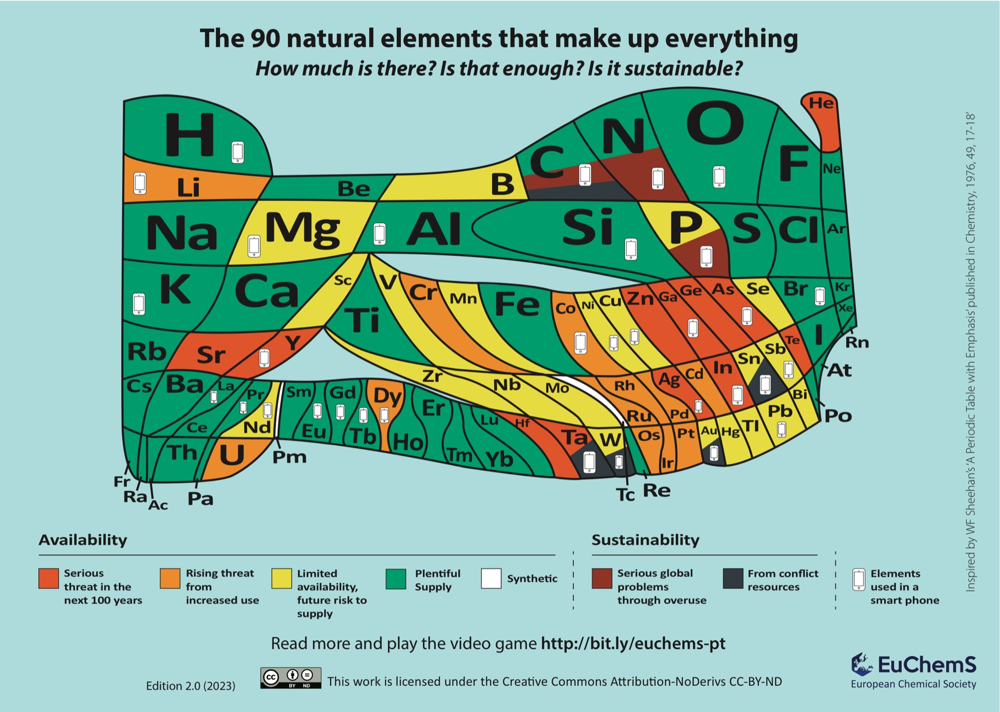

Odkud se vzaly, kde se nacházejí, kolik jich máme a proč na tom záleží
Přednáška 1 · Zdroje prvků na Zemi
Cíle přednášky
Vysvětlit, odkud se prvky ve vesmíru vzaly a co je transmutace
Popsat, proč jsou některé prvky v zemské kůře hojné a jiné vzácné
Rozlišit zdroj (resource) a zásobu (reserve) a kriticky číst „vystačí na X let“
Vysvětlit, co jsou kritické suroviny EU a proč je rizikem koncentrace, ne vzácnost
Znát hlavní zdroje dat o surovinách (USGS, Our World in Data)
Na úvod
Kolik různých chemických prvků máte právě teď v kapse?
Chytrý telefon obsahuje přibližně 30 chemických prvků.
Lithium (Li) a často kobalt (Co) v baterii, indium (In)
v průhledné vodivé vrstvě displeje, tantal (Ta) a zlato (Au)
v elektronických součástkách, neodym (Nd) a praseodym (Pr)
v některých magnetech reproduktorů a vibračního motorku,
křemík (Si) v čipech a hliník (Al) v konstrukci.
Mapa prvků · kolik jich je a vystačí?

EuChemS, The 90 natural elements that make up everything, ed. 2.0 (2023), CC BY-ND
Plocha = kolik prvku je v zemské kůře a atmosféře (logaritmicky). Barva = jak dlouho prvku "bude dost": od zelené (dostatek) po červenou (vážné ohrožení do 100 let).
Úkol · 3 min ve dvojicích
Najděte prvky s ikonou telefonu, které jsou červené nebo oranžové.
Najděte prvek, který má velkou plochu, a přesto není zelený. Jak je to možné?
Mapa prvků · komentář k úkolům
1 · Ohrožené prvky v telefonu
Červené: galium (Ga) a arsen (As) v čipech pro LED a mobilní signál, indium (In) ve vodivé vrstvě dotykového displeje, stříbro (Ag) ve vodivých spojích, yttrium (Y) v luminoforech. Oranžové: lithium (Li) a kobalt (Co) v baterii, dysprosium (Dy) v magnetech.
Proč jsou ohrožené, i když jich v telefonu jsou jen miligramy?
Vedlejší produkt: Ga se získává při výrobě hliníku, In při výrobě zinku. Nabídka závisí na těžbě jiného kovu.
Koncentrace těžby: většina kobaltu pochází z DR Kongo, tantal (Ta) je navíc konfliktní surovina.
Rozptyl: malá množství v mnoha výrobcích se špatně recyklují.
2 · Hodně ho je, a přesto problém
Uhlík (C) a dusík (N): je jich dostatek (zelená), ale vínová část značí nadměrné využívání: CO₂ ze spalování fosilních paliv, reaktivní dusík z hnojiv a eutrofizace vod.
Fosfor (P): velká plocha, ale žlutý i vínový. Těžitelné fosfáty jsou soustředěné v několika zemích (hlavně Maroko), fosfor nelze ničím nahradit a z polí se splachuje do vod.
Hořčík (Mg): v kůře ho je hodně, ale výroba kovu je soustředěná téměř celá v Číně, proto je kritickou surovinou EU.
Helium (He): ve vesmíru druhý nejhojnější prvek, na Zemi červené. Získává se ze zemního plynu a po úniku do atmosféry odchází do vesmíru, nelze ho získat zpět.
Pointa:hojnost (kolik prvku v kůře je) ≠ dostupnost (zda ho umíme spolehlivě a ekonomicky získat) ≠ udržitelnost (jaké dopady má jeho využívání).
01
Odkud se prvky vzaly
Nukleosyntéza a transmutace
Nukleosyntéza · vznik prvků
Z čeho vznikl chemický svět?
Atomy, ze kterých je složena Země i naše těla, mají kosmickou historii.
Země vznikla z materiálu, který byl před jejím vznikem obohacen
o prvky vytvořené v předchozích generacích hvězd.
Nukleosyntéza · jaderná fúze
Proč fúze ve hvězdách nestačí?
Oblast železa a niklu představuje přibližnou hranici,
za kterou fúze přestává být energeticky výhodná.
Nukleosyntéza · těžší prvky
Jak vzniká zlato, platina nebo uran?
Těžší prvky vznikají také záchytem neutronů.
Srážka neutronových hvězd GW170817 v roce 2017 poskytla
významný důkaz vzniku těžkých prvků při těchto událostech.
Nukleosyntéza · propojení s udržitelností
Může nám na Zemi nějaký prvek dojít?
Prvek nezaniká, může se stát téměř nedostupným.
Prvek může na Zemi stále existovat, ale nemusí být dostupný
v dostatečné koncentraci nebo formě pro jeho ekonomicky
a environmentálně přijatelné získávání.
Transmutace · přeměna prvků na Zemi
Přirozená transmutace
Uran → olovo
²³⁸U → … → ²⁰⁶Pb · Rozpadová řada · poločas ²³⁸U: 4,47 mld. let
Radioaktivním rozpadem se jeden chemický prvek může
přeměnit na jiný.
Helium v některých ložiscích
zemního plynu vzniká alfa rozpadem uranu a thoria.
Transmutace · jaderné technologie
Umělá transmutace
Technecium (Tc)→ Metastabilní 99mTc se využívá v nukleární medicíně.
Plutonium (Pu)→ V reaktorech vzniká z uranu-238 záchytem neutronu
a následnými beta rozpady.
CERN: olovo → zlato (2025)
Při těsných průletech jader olova v LHC mohou vznikat
jádra zlata. Celkem jen řádově desítky pikogramů.
Transmutace je fyzikálně možná, ale není praktickou
cestou k získávání surovin.
02
Kde prvky na Zemi jsou
Složení Země a proč není všude stejné
Data
Celá Země × zemská kůra
Hmotnostní zastoupení prvků (%)
Celá Země · včetně jádra a pláště
Fe 32
O 30
Si 15
Mg 14
ost. 9
Zemská kůra · hmotnostní zastoupení
O 46
Si 28
Al 8
Fe 6
Ca 4
ost. 8
Celá Země: dominuje Fe.
Kůra: dominuje O a Si.
Prvky „mají své oblíbené společníky“
Železomilné
Fe, Ni, Co, Au, Pt.
Při vzniku Země se přednostně
rozdělily do kovového jádra.
Proto jsou v kůře vzácné.
Sírumilné
Cu, Zn, Pb, Ag, Hg.
Často se koncentrují v
sulfidech (např. CuFeS₂).
Mohou se vyskytovat společně
a získávat při jednom zpracování.
Horninomilné
Si, Al, Na, K, Ca, Li, REE.
Především v silikátech,
oxidech a dalších minerálech.
Dominují složení kůry.
Atmofilní
N, vzácné plyny, H, C.
Afinitou k atmosféře a dalším
povrchovým rezervoárům se
odlišují od prvků v horninách.
Periodická soustava jako mapa surovin
Oblast tabulky
Příklady
Kde je najdeme
K čemu je potřebujeme
s-prvky (1. a 2. skupina)
Li, Na, K, Mg, Ca
soli, solanky, vápenec
baterie, hnojiva, stavebnictví
přechodné kovy
Fe, Cu, Ni, Co, Ti, Pt
rudy: oxidy, sulfidy
konstrukce, elektřina, katalyzátory
lanthanoidy
Nd, Pr, Dy, Tb
monazit, bastnäsit
magnety, displeje
p-prvky: kovy a polokovy
Al, Si, Ga, Ge, In, Te
bauxit, křemen, vedlejší produkty
elektronika, fotovoltaika
p-prvky: nekovy
C, N, O, P, S, F
ropa, uhlí, vzduch, fosfáty
paliva, plasty, hnojiva
Postavení v tabulce předpovídá chemii prvku, a tím i to, jak se těží a zpracovává.
03
Zdroje a zásoby
Proč „vystačí na 40 let“ neznamená, že za 40 let dojdou
Co je ruda
Kov
V kůře
V rudě
Obohacení
Fe
5,6 %
50–65 %
~10×
Cu
27 ppm
~0,8 %
~300×
Au
~0,001 ppm
1–5 g/t
1 000–5 000×
ppm = mg/kg = g/t. 0,8 % = 8 000 ppm.
Ruda je přírodní materiál, z něhož lze
za daných podmínek ekonomicky získávat
kov nebo jinou cennou surovinu.
O tom, zda je ložisko využitelné, rozhoduje
nejen obsah kovu, ale také technologie,
náklady a podmínky těžby.
Nižší obsah kovu obvykle znamená více materiálu
k vytěžení a zpracování na jednotku získaného kovu.
Zdroj × zásoba
Zásoby rostou, když se potvrdí nové ložisko,
vzroste cena nebo se zlepší technologie těžby.
Zásoby klesají, když se těží, klesne cena
nebo se změní technické či legislativní podmínky.
Práce s daty · měď 2000–2024
Statický index předpověděl konec mědi. Co se stalo?
světové zásoby vytěženo celkem od roku 2000
Úkol · odečtěte z grafu
Jaké byly zásoby v roce 2000 a v roce 2024?
V roce 2000 se vytěžilo 13 Mt mědi. Spočítejte statický index (zásoby / těžba). Do kterého roku by měď „vystačila“?
Ve kterém roce oranžová čára překročila zásoby z roku 2000?
Proč jsou zásoby v roce 2024 přesto téměř 3× vyšší?
Zdroj: USGS Mineral Commodity Summaries 2001–2025 (zásoby); těžba USGS via Our World in Data, Minerals explorer.
Řešení · měď 2000–2024
Co jsme odečetli
Zásoby: asi 340 Mt v roce 2000 a 980 Mt v roce 2024.
Statický index 2000: 340 / 13 ≈ 26 let. Podle něj by měď „vystačila“ do roku 2026.
Kolem roku 2020 oranžová čára překročila zásoby z roku 2000. Za roky 2001–2024 se vytěžilo celkem asi 430 Mt, tedy víc, než kolik činily zásoby v roce 2000.
4 · Proč zásoby přesto rostou?
Zásoby nejsou geologická konstanta, ale ekonomický údaj (viz McKelveyho diagram). Do zásob se postupně přesouvají zdroje, protože:
průzkum objevuje nová ložiska,
vyšší ceny zpřístupní ložiska, jejichž těžba se dříve nevyplatila,
nové technologie umožní zpracovat chudší rudy.
Statický index proto nezůstal na 26 letech, ale vzrostl na 980 / 23 ≈ 43 let (2024).
Pointa: statický index je snímek dnešní ekonomiky, ne předpověď, kdy surovina dojde. Zásoby se mění s cenou, technologiemi a průzkumem.
Manažerský úkol · rostoucí poptávka
„Měď dojde za 43 let.“ Co řeknete vedení?
Kolik mědi se vytěží od roku 2025, pokud těžba (dnes 23 Mt/rok) poroste o 0, 2 nebo 4 % ročně. V letech 2000–2024 rostla v průměru o 2,3 % ročně.
Jste manažer/ka udržitelnosti výrobce kabelů. Ve zprávě pro vedení se objevil titulek výše.
Odečtěte, ve kterém roce by se zásoby z roku 2024 vyčerpaly při růstu 0 %, 2 % a 4 %.
Proč ani tak nejde o datum, kdy měď „dojde“? (Vzpomeňte na předchozí graf.)
Napište vedení dvě věty: jaké je skutečné riziko pro firmu a co navrhujete.
Řešení · manažerský úkol
1 · Kdy by se zásoby z roku 2024 vyčerpaly
0 % / rok
≈ 2067
2 % / rok
≈ 2055
4 % / rok
≈ 2049
Při nulovém růstu vyjde přibližně 43 let. S rostoucí poptávkou se doba zkracuje (dynamický index). Titulek je tedy příliš optimistický, protože počítá s neměnnou spotřebou.
2 · Proč to není datum konce
Zároveň je příliš pesimistický: zásoby se doplňují ze zdrojů. Podle USGS obsahují známé zdroje asi 2,1 mld. t mědi a neobjevené asi 3,5 mld. t, tedy několikanásobek dnešních zásob.
3 · Vzorová zpráva pro vedení
„Fyzické vyčerpání mědi nám v příštích desetiletích nehrozí. Skutečným rizikem je kolísání ceny, rostoucí energetická náročnost těžby a závislost na několika zemích, proto navrhujeme zvýšit podíl recyklované mědi a rozložit nákup mezi více dodavatelů.“
Skutečná rizika pro výrobce kabelů:
cena a její výkyvy,
energie a emise na tunu mědi rostou s klesajícím obsahem kovu v rudách,
koncentrace: Chile těží 23 %, Čína rafinuje asi 44 % světové mědi.
Opatření: recyklace a zpětný odběr, více dodavatelů a dlouhodobé kontrakty, kde to jde, náhrada hliníkem.
04
Kritické suroviny
Riziko není vzácnost, ale koncentrace
Data · podíl největšího producenta na světové výrobě (2024)
Gallium · Čína (zpracování)
99 %
Grafit · Čína
79 %
Kobalt · DR Kongo
76 %
Vzácné zeminy · Čína
69 %
Nikl · Indonésie
59 %
Ocel · Čína
52 %
Lithium · Austrálie
37 %
Měď · Chile
23 %
Těžba, u gallia zpracování. Zdroj: USGS via Our World in Data, Minerals explorer. otevřít v OWID ↗
EU: Nařízení o kritických surovinách (2024)
34kritických surovin
17strategických z nich
Kritické = vysoký ekonomický význam
a riziko narušení dodávek.
Strategické = klíčové pro technologie
energetiky, digitalizace, obrany a letectví
a kosmonautiky.
Referenční hodnoty EU do roku 2030
Těžební kapacita
10 %
Zpracování
40 %
Recyklační kapacita
25 %
Závislost na 1 zemi
max. 65 %
První tři hodnoty: kapacity vztažené k roční
spotřebě strategických surovin EU.
Poslední: limit závislosti na jediné třetí zemi.
CRMA · Jak číst cíle EU
Nejde jen o to, kolik suroviny vytěžíme
10 % · Těžba
EU chce část potřebných surovin získávat
z vlastních ložisek.
Příklad: lithium v oblasti Cínovce.
40 % · Zpracování
Nestačí surovinu vytěžit. Je třeba ji také
upravit a zpracovat na použitelný materiál.
Příklad: výroba materiálů pro baterie.
25 % · Recyklace
EU chce posílit schopnost získávat suroviny
z použitých výrobků a odpadů.
Příklad: získávání kovů z baterií.
65 % · Diverzifikace
U jedné strategické suroviny nemá více než
65 % spotřeby EU pocházet z jediné třetí země
v žádné relevantní fázi zpracování.
Cíl: snížit závislost na jediném dodavateli.
Tři cíle posilují kapacity EU, čtvrtý omezuje
jednostrannou závislost na dodavatelích.
CRMA · Příklady z praxe
Kritická surovina může rozhodnout o výrobě
Baterie
Li, Co, Ni, grafit
Elektromobily a úložiště energie.
Závislost na těžbě, rafinaci a výrobě
aktivních materiálů.
Permanentní magnety
Nd, Pr, Dy, Tb
Některé elektromotory a větrné turbíny.
Rizikem je koncentrace těžby i zpracování
vzácných zemin.
Elektronika
Ga, Ge, Si
Čipy, optika a polovodičové technologie.
Specializovaná výroba a omezený počet
dodavatelů.
Co je důležité?
Nejen samotná těžba, ale také separace,
rafinace, výroba materiálů a dostupnost
alternativních dodavatelů.
CRMA · Přesah do managementu udržitelnosti
Jak má firma řídit surovinová rizika?
Mapovat materiálové toky
Zjistit, jaké kritické suroviny výrobek obsahuje,
v jakém množství a odkud pocházejí.
Řídit dodavatelská rizika
Sledovat závislost na jednotlivých zemích,
dodavatelích a zpracovatelských kapacitách.
Navrhovat cirkulárně
Prodlužovat životnost, opravovat, opětovně
používat a usnadnit demontáž a recyklaci.
Hledat náhrady
Ověřit, zda lze kritickou surovinu nahradit
materiálem s nižším rizikem a přijatelnými
dopady během celého životního cyklu.
Manažerské rozhodnutí není pouze ekonomické.
Musí zohlednit také environmentální a sociální
dopady těžby, zpracování a dodavatelského řetězce.
Odkud jsou čísla · zdroje dat k celému bloku
Our World in DataGrafy a data ke stažení (CSV) o emisích, energii, surovinách, plastech, vodě. U každého grafu uvádí původní zdroj.
začněte tady
USGS Mineral Commodity SummariesAmerická geologická služba. Každý leden těžba a zásoby ~90 surovin podle zemí.
primární zdroj o surovinách
Evropská komise: RMISInformační systém EU o surovinách, seznam kritických surovin, profily surovin.
pohled EU
IEAMezinárodní energetická agentura: Critical Minerals Outlook, data explorery.
suroviny pro energetiku
Shrnutí
Prvky vznikly ve hvězdách. Země je uzavřený systém: prvky nemizí, ale mohou se rozptýlit tak, že je nedokážeme získat zpět.
Kůru tvoří hlavně O, Si, Al, Fe. Většina „technologických“ prvků je dohromady ~2 %.
Chemie prvku určuje, v jaké rudě ho najdeme a s jakými prvky se vyskytuje.
Zásoby jsou ekonomický údaj. „Vystačí na X let“ není předpověď konce.
Kritičnost suroviny = význam × riziko dodávek. Největší riziko je soustředění těžby a zpracování v několika zemích.
Volitelný úkol na příští přednášku
Krátká prezentace: jeden prvek, jedno manažerské rozhodnutí
Rozsah: 5 minut, jednotlivě, slidy nejsou podmínkou.
Výběr: jedno z pěti témat na dalších slidech. Každé téma zpracuje jen jeden studnet, napište mi e-mail nejpozději 24 h před přednáškou, které si berete.
Osnova: každé téma má tři podotázky. Odpovězte postupně na všechny tři, to je kostra vaší prezentace.
Data: alespoň jedno číslo s uvedeným zdrojem a rokem (USGS, OWID, EU…).
Každá prezentace musí obsahovat
Chemii: proč se prvek chová, jak se chová (navázat na dnešní přednášku).
Data: kolik, kde, kdo (s jednotkou a zdrojem).
Doporučení pro praxi: co by měla udělat firma, obec nebo stát. Jednou až dvěma větami.
Volitelný úkol · téma 1 ze 5
Helium: plyn, který z planety uniká
Proč to řeší manažer: nemocnice s magnetickou rezonancí, výroba čipů a laboratoře jsou na heliu závislé a jeho cena i dostupnost v posledních letech prudce kolísaly.
1
Chemie a původ: Odkud se helium na Zemi bere a proč ho najdeme právě v ložiscích zemního plynu?
2
Proč je „červené“: Proč helium uniká z atmosféry do vesmíru a nedá se získat zpět? Kdo ho dnes produkuje (zpracovává)?
3
Rozhodnutí: Nemocnice provozuje přístroje MRI chlazené kapalným heliem. Jaká opatření má k dispozici (zachytávání a recyklace, nové typy přístrojů, smlouvy s dodavateli)?
Navazuje na: nukleosyntéza a transmutace (α-rozpad), mapa EuChemS (He je červené). Kde začít: USGS Mineral Commodity Summaries, kapitola Helium; mapa EuChemS.
Volitelný úkol · téma 2 ze 5
Sírumilné prvky: co se těží „navíc“ s mědí a zinkem
Proč to řeší manažer: těžební firma odpovídá i za odpad. Kyselé důlní vody mohou znečišťovat řeky ještě desítky let po uzavření dolu.
1
Chemie: Proč se Cu, Zn, Pb, Ag, ale i Cd, As a Hg vyskytují společně v sulfidech? Jak to souvisí s Goldschmidtovou klasifikací?
2
Problém: Co se stane, když se sulfidy z hlušiny dostanou do kontaktu se vzduchem a vodou?
3
Rozhodnutí: Najděte jeden případ (např. historické doly v ČR). Kdo nese náklady na sanaci a jak by se tomu dalo předejít při plánování nového dolu?
Navazuje na: Goldschmidtova klasifikace (sírumilné prvky), koncentrace kovů v rudách. Kde začít: Česká geologická služba (důlní díla a staré zátěže), USGS, vyhledávání „acid mine drainage“.
Volitelný úkol · téma 3 ze 5
Zlato: ekologická stopa jednoho prstenu
Proč to řeší manažer: šperkařské a elektronické firmy musí doložit původ zlata (konfliktní suroviny) a čím dál častěji se rozhodují mezi těženým a recyklovaným zlatem.
1
Chemie: Proč je zlato v zemské kůře tak vzácné a proč ho v přírodě nacházíme ryzí? Kolik gramů zlata obsahuje typická tuna rudy?
2
Dopady těžby: Jak se zlato z rudy získává (kyanidové loužení, amalgamace rtutí v drobné těžbě)? Jaká rizika to přináší pro lidi a vodu?
3
Ověřte tvrzení: „Tuna starých mobilů obsahuje víc zlata než tuna rudy.“ Platí to? Jaký podíl zlata dnes pochází z recyklace?
Navazuje na: vznik těžkých prvků (srážky neutronových hvězd), železomilné prvky, mapa EuChemS (Au jako konfliktní surovina). Kde začít: World Gold Council (data o nabídce a recyklaci), Minamatská úmluva o rtuti (UNEP), USGS kapitola Gold.
Volitelný úkol · téma 4 ze 5
Fosfor: hnojivo s nechtěnými společníky
Proč to řeší manažer: bez fosforu nejsou potraviny. Zásoby fosfátů jsou soustředěné v několika zemích a EU je řadí mezi kritické suroviny.
1
Chemie: V jaké hornině fosfor těžíme a proč fosfáty často obsahují i kadmium a uran? Co to znamená pro hnojiva a půdu?
2
Data: Odečtěte z USGS, jak soustředěné jsou světové zásoby fosfátů. Jaký podíl má Maroko? Spočítejte statický index jako u mědi.
3
Rozhodnutí: Fosfor lze získávat zpět z čistírenských kalů. Měla by ho obec nebo stát povinně recyklovat? Najděte příklad země, která to už zavedla.
Navazuje na: statický index a zásoby, kritické suroviny EU, mapa EuChemS (P: omezená dostupnost i nadměrné využívání). Kde začít: USGS Mineral Commodity Summaries, kapitola Phosphate rock; Nařízení (EU) 2019/1009 o hnojivých výrobcích (limity Cd).
Volitelný úkol · téma 5 ze 5
Prvky, které ztrácíme navždy: rozptyl a recyklace
Proč to řeší manažer: designér výrobku dnes rozhoduje o tom, zda se kov za 10 let vrátí do oběhu, nebo skončí rozptýlený na skládce či v přírodě.
1
Proč se kovy recyklují tak různě: Některé kovy se z vysloužilých výrobků recyklují z více než 50 %, jiné z méně než 1 %. Které to jsou a čím se liší?
2
Rozptyl: Najděte příklady rozptylového použití, kdy se prvek při používání ztratí (pigmenty, otěr pneumatik, hnojiva, nanočástice). Proč tento prvek už nezískáme zpět?
3
Rozhodnutí: Vyberte jeden výrobek (např. sluchátka, kolo, LED žárovka). Navrhněte dvě změny designu, které usnadní recyklaci kovů.
Navazuje na: Země jako uzavřený systém: prvky nemizí, ale rozptýlí se. Mapa EuChemS. Kde začít: UNEP International Resource Panel: Recycling Rates of Metals (2011), periodická tabulka recyklace kovů.